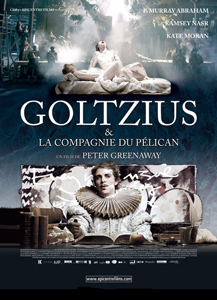
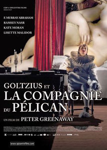
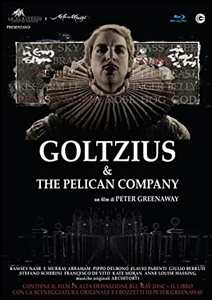
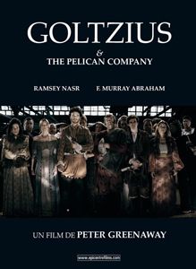
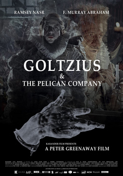
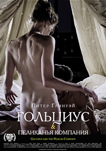

2012

The film is based on the life of Hendrik Goltzius, a late 16th-century Dutch printer and engraver of erotic prints. He seduces the Margrave of Alsace into paying for a printing press to make and publish illustrated books. Goltzius promises him an extraordinary book of pictures of the Old Testament Biblical stories. Erotic tales of the temptation of Adam and Eve, Lot and his daughters, David and Bathsheba, Joseph and Potiphar's wife, Samson and Delilah, and John the Baptist and Salome. To tempt the Margrave further, Goltzius and his printing company offer to perform dramatisations of these erotic stories for his court.
Hendrik Goltzius
The Margrave of Alsace
Sophie
Priest 2
Beatrice Fereres
Messenger
Adaela
Eduard Hansa
Strachey
Portia
Quadfrey
Samuel van Gouda
Isadora
Ebola Goyal
Ricardo del Monte



In real life Hendrik Goltzius (January or February 1558 – 1 January 1617) was a German-born Dutch printmaker, draftsman and painter. He was the leading Dutch engraver of the early Baroque period, or Northern Mannerism, lauded for his sophisticated technique, technical mastership and "exuberance" of his compositions.
Goltzius and the Pelican Company was the second feature in Greenaway's film series "Dutch Masters", which includes the previous film Nightwatching. The third entry in the series was to focus on Hieronymus Bosch and its release was planned to coincide with the 500th anniversary of Bosch's death in 2016.


